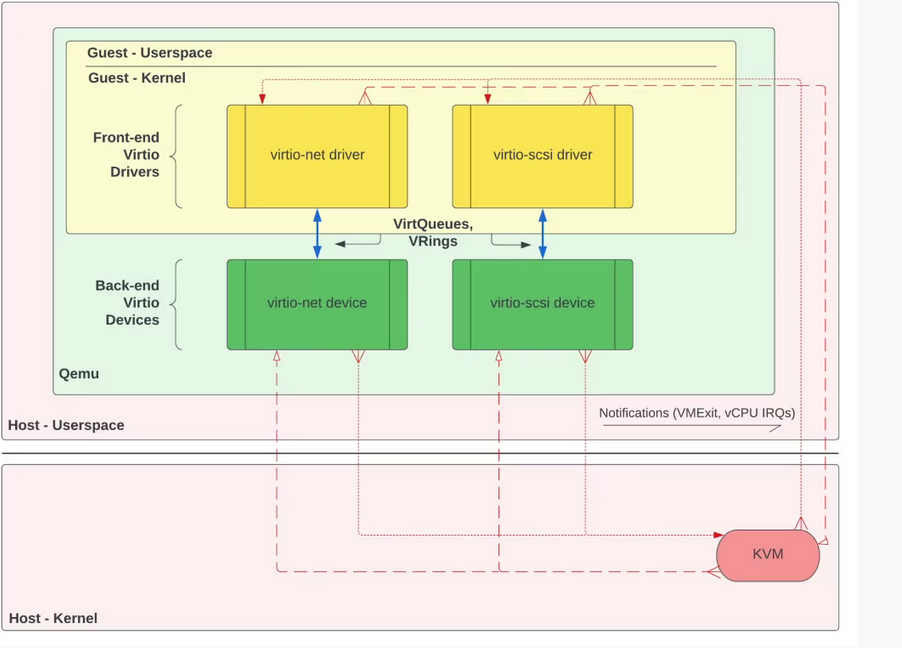
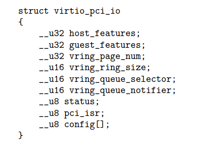
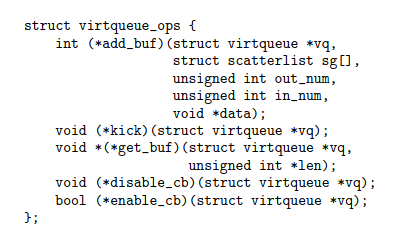

01/26/2024
Intro
I started writing notes on
"virtio: Towards a De-Facto Standard For Virtual I/O Devices", by Rusty Russell,
but then realized that
even after reading the paper, I didn't understand virtio; I didn't understand what problems it solved, or the high level interactions
between the different components involved.
I ended up writing this article as I attempted to better understand it. I've decided to post it for others, as I think it gives a nice high level overview
of what virtio is, what problems it solves, and the different components involved.
Motivations
Rusty Russell's paper on virtio was published in 2008. At the time, there were a wide variety of virtualization platforms. There was User Mode Linux, Xen,
VMware's ESX server, the KVM, and others. Each of these platforms had their own approaches to device emulation, and communication between the guest operating system
and the hypervisor. This resulted in a lack of interoperability between virtualization environments.
The virtio specification aimed to address this issue by providing a standardized interface for virtual devices, allowing virtual machines to communicate with emulated devices in a consistent manner across different hypervisors.
By doing so, virtio sought to improve compatibility, efficiency, and performance in virtualized environments.
Technical details
Virtio devices are an abstraction that are implemented by the hypervisor. However, the hypervisor makes them appear to the guest as if they're real devices.
For example, since the hypervisor intercepts guest I/O operations, it can make it appear as if a virtio device is a PCI device during the guest's PCI bus enumeration.
Once the guest discovers the virtio device, the guest operating system loads in the corresponding virtio device driver to facilitate interaction with the device.
I like this image from Oracle, which shows the overall virtio architecture. It uses the virtio-net driver/device as an example.

Source
The image references a KVM-based VMM. With KVM, the handling of guest I/O traps
is delegated to user space. Here, Qemu is the user space program that implements the virtio-net device backend.
The virtio spec defines different ways that a virtio device can be attached and made available to a guest.
As mentioned earlier,
virtio devices can be made available as PCI devices.
Alternatively, for guests environments without PCI support,
virtio devices can be made available directly as memory mapped io devices
However, this requires the guest to know the
memory mapping of the device ahead of time.
Much of the virtio protocol is independent of how the
device is made visible to the guest. For example, the capabilities of the device are laid out in the device's configuration space the same way, whether the device
is attached through PCI or directly through MMIO. However, going forward, I'm going to limit the conversation to PCI attached virtio devices.
All PCI devices have a configuration space, which can be accessed by the CPU through the host PCI bridge device.
This space contains configuration settings about the PCI device, including the device's identity, and information that helps the BIOS or OS determine how to map
the device onto the CPU's memory or port address spaces. Once the device is mapped into memory or port mapped, then the CPU can access that device's I/O space.
The virtio protocol defines how the virtio device's I/O space is structured.
Although the virtio specification today has a well-defined definition of this space (see "4.1.4.3 Common configuration structure layout"),
I like the simplicity
of Rusty's structure definition from the original virtio paper:

Source
Host features and guest features are defined in the virtio specification and are used to communicate supported features between the driver and the device implemented by the VMM.
The fields that begin with vring_queue are more interesting.
The virtio specification defines a transport abstraction, virtual queues (virtqueues), that is used
for communication through shared memory between guest device drivers and the VMM's device back-ends.
A virtqueue is a queue into which buffers are posted by the guest for consumption by the host.
Each of these buffers is a scatter gather array. A scatter gather array is an array that contains references to discontiguous memory in the guest address space.
A device driver can batch multiple buffers onto the queue, and then
kick the VMM to make it aware that there are buffers ready for consumption. Once the VMM has consumed the buffers, it can interrupt the guest to notify
it of its completion.
The virtqueue API looks like the following:

Source
We can add items to the buffer, kick the VMM to notify it of pending buffers, retrieve consumed buffers, and disable and enable the
callback which is invoked by the VMM when buffers are ready.
Virtqueues are implemented through virtio_rings. Each virtqueue is backed by a virtio_ring, which consists of three components:
a descriptor table that describes buffers, an available ring that describes buffers which are ready for consumption by the host, and a used ring that the host
writes to as buffers are consumed.
The primary benefits of the virtio_ring implementation is that it a) allows batched requests and responses
between the guest and host, b) allows the host to consume buffers in any order, and c) allows zero-copy I/O.
Now, let's return to the definition of a virtio device's I/O address space to see how a device driver in the guest accesses a device's virtual queues:
Source
vring_queue_selector is used to access a device's virtual queues, and vring_queue_notifier
is used to notify the host when the queue has new buffers.
The queue selector is required because devices may implement different numbers of virtual queues. For example, per Rusty's paper, the virtio-blk device only has one virtual queue,
while the virtio-net device uses two queues - one for transmission and one for receiving.
Conclusion
To summarize, virtio devices are most commonly made available to guest virtual machines through PCI.
The PCI configuration space of the device includes the virtio device's identifier, and information that is used to map that device into memory.
It also contains fields that are defined in the virtio specification, and that describe the configuration of the device.
Once the PCI device is mapped into memory, then the I/O space of that device can be accessed by the guest. The I/O space includes fields that allow the virtio device driver to interact with the virtual
queues of the device - allowing for zero-copy and batched I/O operations. The guest's virtio device driver will be responsible for interacting
with the device via this I/O space.
I hope that this provides some insight into the different components of the virtio specification, and how the specification helps reduce the burden of implementing I/O mechanisms for new virtualization platforms and guest operating systems.
If you're interested in digging deeper, I recommend looking through
the specification, and
taking a glance at
Firecracker's virtio device implementations.